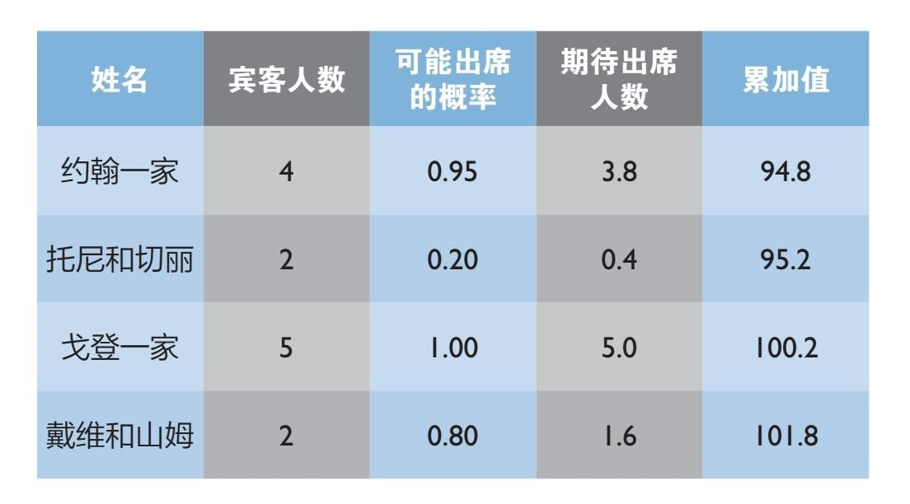
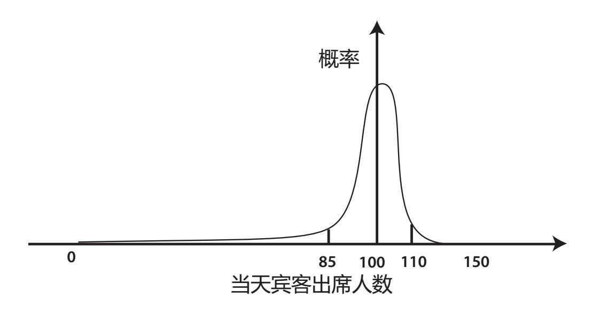
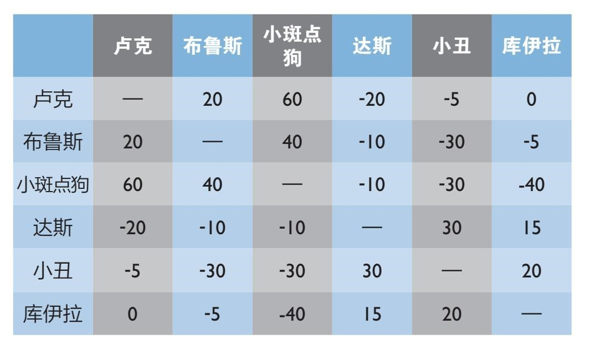
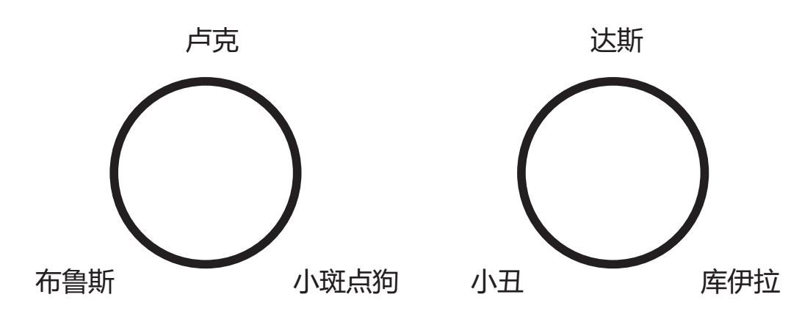
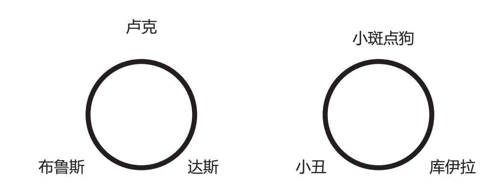

现在我们知道了如何捕获完美伴侣，希望我们有机会在幸福、成功的伴侣关系中安定下来。不过对于那些决定结婚的人来说，王子和公主在过上幸福的生活之前还要面对另一个难题。订婚的兴奋感平复之后，你将面对筹划实际婚礼的可怕事实。
没有一个年轻羞涩的浪漫女孩会想到自己有朝一日会变成怪兽新娘，没有一个准新郎能想象自己会为桌布的颜色搭配而大发雷霆。然而一想到有这么多互相矛盾的考虑因素——双方父母、预算、婚纱、场地、伴娘——我们每个人都会有一点点抓狂（相信我，我有过这方面的惨痛经历）。
不过在你盯着各种书法字体和用来装饰椅子的透明纱质蝴蝶结失控之前，我想试着告诉你如何能用数学帮助你更顺利地度过大喜日子。
你要面对的首要事件便是令人畏惧的宾客名单，这总比想象中要难。能邀请你所见过的每个人是理想化的想法，然而你很快便因预算和场地大小的现实，在同样有机会被邀请的人中做棘手的取舍了。
取决于你定的“携同未婚伴侣出席”条件的严苛程度，你邀请的人往往会带着伴侣或家人出席。比起孤独、单身的人来说，他们更有可能被优先邀请。
即便做完了这些决定，也不是所有受邀请的客人都会出席。保证恰当的来宾人数是一件棘手的平衡工作。来人太少，你有可能拒绝了可能出席的重要人物；来人太多，你则会打破预算，空间也会非常拥挤。
大多数人的应对方式是分批发送请柬，按回复人数来调整邀请数量。然而在这个人们觉得连早餐吃什么都值得在网上发一条状态的年代，这种方式安全吗？婚礼请柬几乎一定会成为公开信息，提醒着第二批被邀请的朋友和家人，他们被排除在你的第一批名单之外。
另一个策略是少邀请，或者确定人数之后再订场地。你也可以用大多数人在此类情形中运用的策略：全凭盲目的猜测。
但是在你和对方父母发生争执之前，还有一种数学方式能够为你提供合理的出发点。
这个方法从列出所有可能被邀请的人开始，以伴侣或家人为单位分组，并由你对其出席的期待程度来排序。这或许已然像是一个艰巨的任务，但如果连你都不知道自己对朋友的喜爱程度，那数学也帮不上忙了。
把这个名单做成一张列表。第一列是被邀请的一行人的名字，第二列是这一行人的人数。
下一步便要判断每组人收到请柬后答应参加婚礼的概率了。思考一下人们住地的远近。他们生活中还在忙什么？他们是否私下很讨厌你？你明白我的意思。
思考的时候用百分比计算，但用小数点的方式记下数字。比如说，你家乡的亲密朋友和她的男友出席的概率或许有95%，所以他们二人共同得分0.95。这个数字要被记录在表格的第三列中。
用第二列数字（每组中的人数）乘以第三列中的相应得分，这会产生第四列数据。它包括了将答应出席的“期望”人数。
列表从上至下，由重要宾客过渡到泛泛之交，同时在第五列中输入期待宾客人数的累加值。最简单的方式便是，在这个累加值超过场地人数限制时停止邀请。一般而言，这样做你便能邀请适当数量的宾客参加婚礼。
下面的表格展示了上述情形。如果场地能容纳100名客人，你便应该把邀请截止在戈登一家人之后。你会寄出大于100封请柬，但一般来说只会有100人出席。可惜，戴维和山姆这次未能入选，但这或许是最好的安排。

心细的读者会发现，得到适当人数这个想法中存在一个问题。因为我们在和概率打交道，所以最后来宾人数或超过场地容量，或少于场地容量。邀请的人少了，能给你机会在最后关头邀请那些不甚重要的人或是被遗忘的客人，然而邀请的人太多则会为婚礼那天带来灾难。
这个想法的升级版本是计算最坏情况并调整停止邀请的标准，这样一来，灾难性超额邀请的可能性将会变得很小。
不过你又要如何计算灾难情形发生的概率呢？
假设你需要邀请150位客人，预计100位会出席婚礼。实际上，接受邀请的有可能是0到150之间的任何一个数字，但是两个极端情形出现的概率极低。
的确，计算所有宾客都出席的概率很容易，你只需把表格第三列中的全部概率相乘。比如，约翰、托尼、戈登与他们的家人、伴侣全部出席的概率是0.95×0.2×1.0=0.19，即19%。
理论上，你可以通过每种接受和拒绝出席的排列组合来计算任意人数的宾客出席婚礼的概率。[1]

如果你把所有可能性画在一张图上，它看上去类似上图。靠近中间的来宾数量的出现概率大得多，而你可以期待大约会有100人出席。
现在要决定合理、安全的缓冲区则更加容易。如果你邀请了150人，你可以相当确信，在这个例子中实际出席的宾客数量将处于曲线顶峰——在85和110之间。
然后你可以重新制图，观察在邀请130人而非150人，或邀请120人而非130人等情形中，曲线以及上下限发生的变化。反复尝试，直到你找到自己可以接受的最好和最坏情况为止。这种方式可以运用在实际生活中。2013年，两位颇具数学头脑的婚礼筹办者达米扬·武克切维奇和琼·高就运用了完全一样的技巧安排了他们的客人名单。他们把宾客分成四个类别，并为每个类别估算了一个出席概率。他们寄出了139份请柬，根据模型预测，106位宾客会出席—102~113的出席人数范围处在95%的置信区间。
实际有105位宾客出席了婚礼，虽然只有97%的人来自原始邀请名单。尽管武克切维奇和高犯了两个相互抵消的错误：高估了本地朋友的出席率，低估了最后时刻加入名单的朋友数量，他们依然正确预测了来宾数量。
就如我们在第一章中所见，这种误差之间的互相抵消是估算问题中反复出现的主题，也是给列表上的每一组数据设置概率的原因之一。毫无疑问，你会对一些宾客过度乐观而又低估了另一些人。虽然你有可能不走运，但是总的来看，一切终将得到解决。没有任何一种方式是完全没有风险的。但它的确能够在决定邀请名单之前为你提供调整名单的着手点。
不过不幸的是，有些婚礼上的错误人们无法轻易忘记。抛开可怕的伴郎发言或是不合身的婚纱不谈，最难以原谅的错误莫过于安排两个仇家坐在一桌。
座位安排是婚礼中至关重要的部分。宾客在这一天里愉快与否很大程度上取决于你如何安排他们入座。安排得好，你能成功地把新郎新娘双方的朋友聚到一起。安排得不好，你便很难抑制室内蔓延的怨气或是室外不可避免的争吵。
你需要尽可能地把成对出席的人或一家人安排到同一张桌子上，并且不惜一切代价分开仇家。
然而这便是优化数学法则能派上用场的时刻了。分配问题与当前讨论的问题非常类似，它无处不在。每当你听到某事物最好、最便宜或最有效率的时候，其中往往蕴含了优化算法。这些被应用在政府、对冲基金、沃尔玛等各个角落的算法可以提供实际操作方案，从而确保婚礼上不会发生与座位相关的争吵。
为了定下最佳座位安排计划，首先定义“最佳”是很重要的。它可能意味着使重要来宾的快乐程度最大化，也可能意味着使整体快乐程度最大化。你私下讨厌一个人，却因礼貌原因不得不邀请他，很有可能你会把目标设定为使这些人的快乐程度最小化。
这些目标都可以达成（虽然我不建议最后一种），不过让我们假设你的目标是使全体人的快乐程度最大化。
我们首先需要定义“快乐”，才能做好这件事。
简单的方法是设置一张表格。通过为每两个宾客坐在一起的快乐程度打分来进行两两比较。当二人熟识并愿意坐在一起时将得到正分。分数越高，越应该安排在同一桌。
不认识的两人将得到零分，而应该被隔开的两个人则会得到负分。当你必须不惜一切代价让某两个人分桌坐时，他俩之间会得到很低的负分。
我们可以用一个让人分外焦虑的只有两桌酒席的婚礼来举例测试这种方式。可惜他们都不是真人，是从一大袋名字中随机选出来的。

这里的答案很明显：让卢克、布鲁斯和小斑点狗坐在一桌，让爱煞风景的达斯、小丑和库伊拉坐另一桌。
看看卢克那一列我们就知道，他若和布鲁斯坐在一起能得到20分的“快乐点数”，若和小斑点狗坐在一起则能得到60分。总共是80分。
同样，布鲁斯将一共得到60个快乐点数，而小斑点狗则会和他的两个新朋友在一起度过快乐时光并得到100分。

在暴躁席上，达斯得到45分，小丑50分，库伊拉35分。至少他们为一同卑鄙而感到快乐。把所有宾客的得分相加，这个席位安排共得到370分。对于派对来说，这是个不错的开始。
不过仅仅调换两位客人就会引发灾难。如果把小斑点狗和达斯调换位置（所以卢克、布鲁斯和达斯一桌，小斑点狗、小丑和库伊拉一桌），总分会跌到-120。
这个例子很简单，最理想的坐法从一开始就很明显，但是在更大型的婚礼中，这个计算技巧的确能为更大规模、更真实的席位安排提供方案。
基本方式是一样的。从理论角度来看，你可以手动分析每一种席位安排的排列组合。那么问题就解决了。
哦，还有一个问题。即便是在只有17个来宾分两桌坐的小婚礼上，席位分配方式也已经有131 702种了。

一个能每秒钟处理一种安排方案的电脑程序，要用两周多的时间才能处理完所有可能的排列组合。手动计算需要几十年时间，这可能会吓跑你的伴侣。邀请的来宾越多，这个计算时间就越长。一个有十桌、共一百位客人的婚礼则有65万亿万亿万亿万亿万亿万亿万亿种不同的席位安排方式。祝你好运，尽量在婚礼之前算出结果。
数学优化的魔力在这里才真正派上用场。有大量巧妙的数学方式能够帮助你不必细看就能略过绝大多数糟糕的排列组合方式。[2]这意味着你不必为每一种席位安排计算总分，不必分析每种情形，快速、高效地从各种排列组合中找到最好的方式。
梅根·贝洛斯和J·D·彼得森运用这一策略为二人在2012年的婚礼制定了酒席座位安排。他们首先为107位宾客中的每个人评出一个快乐点数。
考虑到问题的规模，他们决定放弃笔纸，做了每个自重的婚礼筹划者都会做的事：运用通用代数建模系统（GAMS）软件和CPLELX求解程序帮助他们解题。[3]他们在36小时内做出了席位安排。
如果你对数值优化问题的电脑编程技术知识略知一二的话，你应该可以手动算出较复杂的一两个座位图，否则还是向你那友好的数学家邻居寻求帮助吧。我发现他们往往乐此不疲。
很难保证结果永远完美。数学答案的质量取决于你提供的数值。不过在你把席位安排交给对方父母之前，数学可以提供给你一个好的切入点。之后你们就可以进行真正的讨论了。
[1] 尽管运用蒙特卡罗电脑模拟更加合理，蒙特卡罗法提供了允许不必考虑每一种排列组合的抽样方式。
[2] 相关例子包括模拟退火算法和下山单纯形法，二者都有助于高效寻找最优方案。
[3] CPLEX求解程序运用了线性规划算法，并利用快乐指数在求解空间中建立可行域。它假设最优解位于单纯形的表层，因此略过了位于这个凸多胞形内部的一切数据。